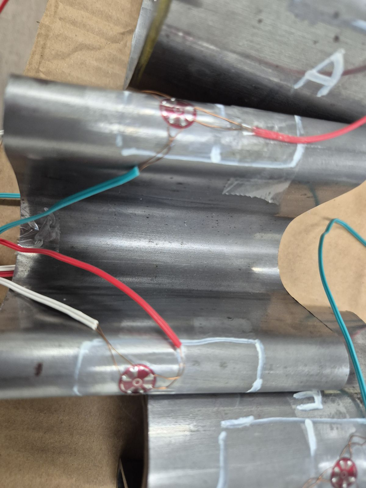
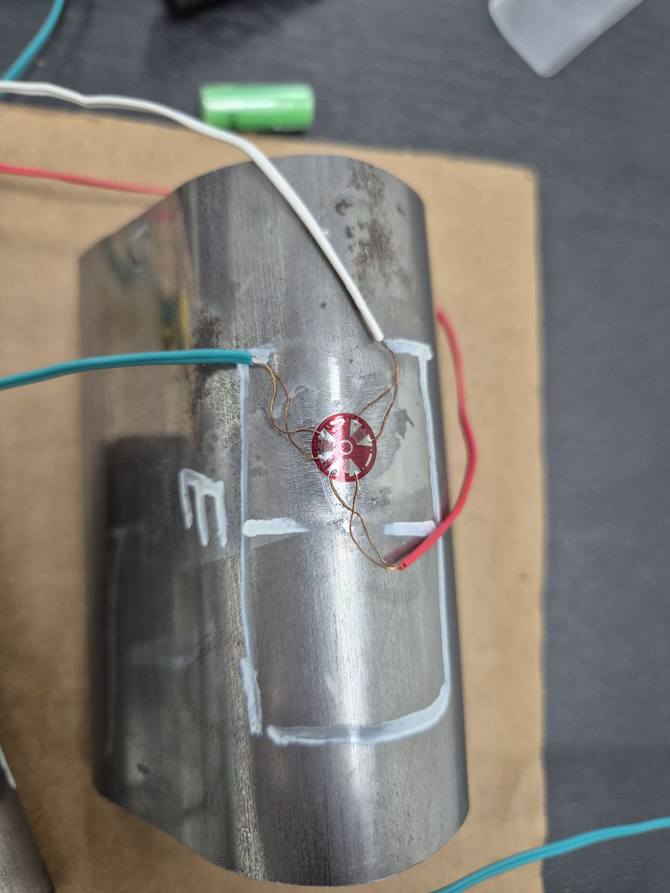
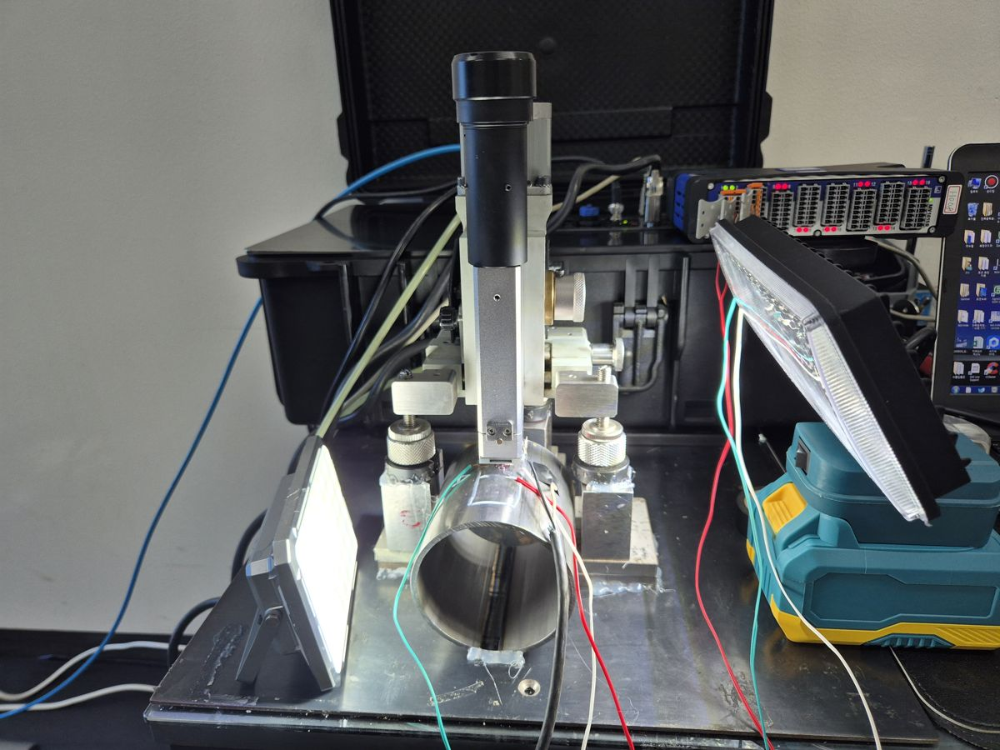
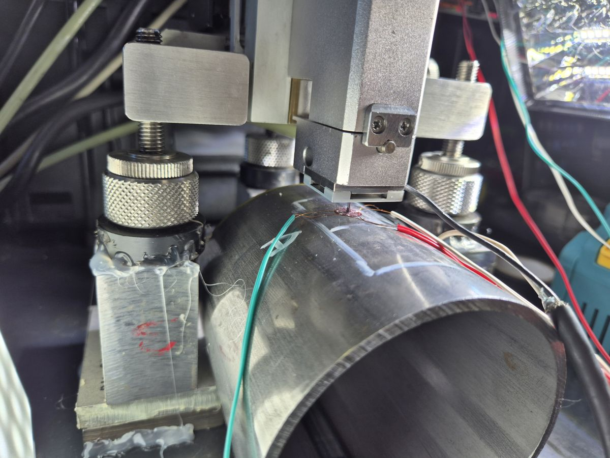
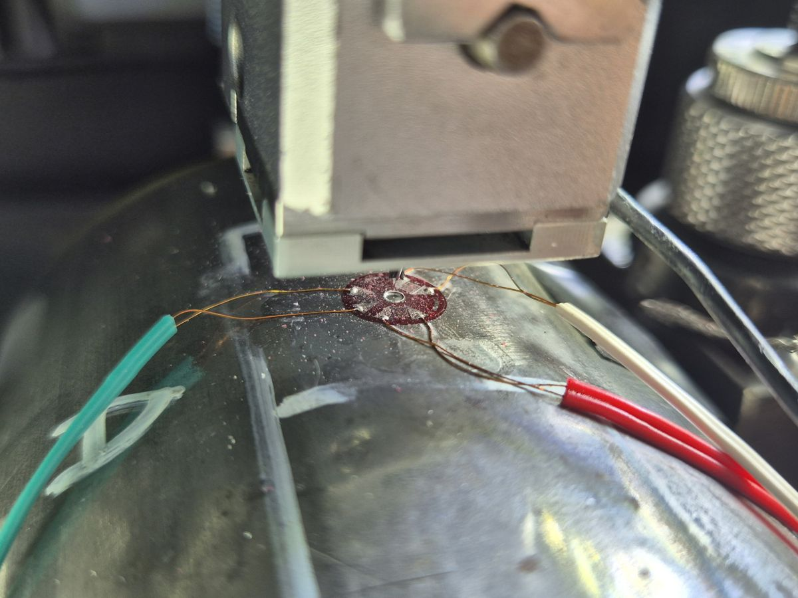
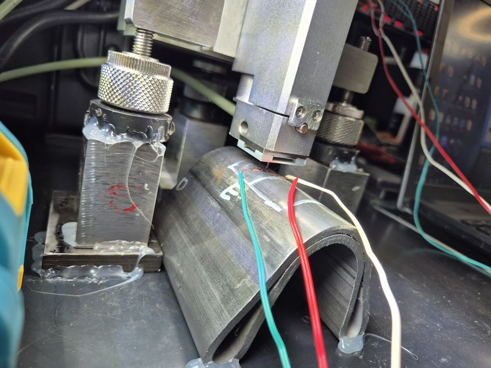

← 기술자료 목록
절곡면 잔류응력 측정 사례
현장 계측 사례 · 절곡면 잔류응력
절곡면 잔류응력 측정 사례
강관 절곡 시편 홀드릴링
강관을 U형으로 절곡한 시편 4종과 가공 전 원통 레퍼런스 시편, 총 5개 시편 9포인트에 잔류응력측정용 스트레인게이지를 부착하고 ASTM E837 홀드릴링으로 절곡면 잔류응력을 측정한 현장 계측 사례입니다.
5개 시편
절곡 시편 4종 +
원통 레퍼런스 1종
원통 레퍼런스 1종
9포인트
시편별 측정 위치
잔류응력측정용 스트레인게이지 부착
잔류응력측정용 스트레인게이지 부착
ASTM E837
SINT MTS3000
홀드릴링 측정
홀드릴링 측정
시험 개요
절곡 성형된 강관은 굽힘부가 소성 변형을 받아 잔류응력이 남기 쉽고, 이 값은 부품의 강도와 피로 특성에 영향을 줍니다. 씨앤디테크는 U형으로 절곡한 강관 시편 4종(A~D)의 측면 절곡면과 가공 전 원통형 레퍼런스 시편(E)에 잔류응력측정용 스트레인게이지를 부착하고, ASTM E837 홀드릴링으로 잔류응력을 측정했습니다.

절곡 시편 잔류응력측정용 스트레인게이지 부착 및 위치 표시

원통 레퍼런스 시편 잔류응력측정용 스트레인게이지 부착
계측 절차
시편마다 잔류응력측정용 스트레인게이지를 부착하고 위치를 표시한 뒤, 곡면 시편을 지그에 고정해 홀드릴링 장비로 단계별 변형률을 기록했습니다.
01
시편·측정 위치 확인
절곡 시편 4종과 원통 레퍼런스, 시편별 측정 위치 확인
02
측정 표면 준비
측정 부위 표면을 정리해 게이지 접착면 확보
03
잔류응력측정용 스트레인게이지 부착·위치 표시
각 위치에 잔류응력측정용 스트레인게이지 부착 후 시편 기호와 위치 표시
04
지그 고정·결선
곡면 시편을 지그에 고정하고 리드선 결선
05
홀드릴링 가공
SINT MTS3000으로 단계별 드릴링, 변형률 기록
06
ASTM E837 해석
변형률 변화로 잔류응력 크기·방향 산출

홀드릴링 장비와 계측 구성

시편 지그 고정 및 장비 설치

절곡면 잔류응력측정

절곡면 잔류응력측정
지원 역량 및 서비스 범위
씨앤디테크는 SINT MTS3000 홀드릴링 장비로 절곡·성형 부품과 강관 시편의 잔류응력을 현장에서 직접 측정하고, 위치 선정부터 잔류응력측정용 스트레인게이지 부착, 데이터 해석까지 한 번에 지원합니다.
관련 기술 자료 더 보기:
자주 묻는 질문 (FAQ)
절곡면 잔류응력 측정 관련 질문
강관이나 판재를 절곡하면 굽힘부가 소성 변형을 받으면서 바깥쪽은 늘어나고 안쪽은 줄어듭니다. 하중을 제거해도 변형이 완전히 원래대로 돌아오지 않아 굽힘부에 잔류응력이 남습니다. 절곡 각도, 반경, 소재 두께에 따라 크기와 분포가 달라집니다.
절곡 전 원통 상태의 시편을 같이 측정하면 가공으로 인한 잔류응력 변화가 어느 정도인지 비교할 기준이 생깁니다. 이번 사례도 원통형 파이프 1개를 레퍼런스로 포함했습니다.
잔류응력측정용 스트레인게이지를 부착할 면과 장비를 안정적으로 고정할 지그가 확보되면 가능합니다. 이번 사례는 U형으로 절곡된 시편의 측면 굽힘부를 지그에 고정해 측정했습니다.
가능합니다. 씨앤디테크는 SINT MTS3000 홀드릴링 장비로 시편이 있는 현장에서 직접 측정합니다. 시편 소재, 형상, 측정 위치를 알려주시면 일정을 안내해 드립니다.
절곡면 잔류응력 측정 문의
시편 소재, 형상, 측정 위치를 알려주시면 측정 방법과 일정을 안내해 드립니다. 현장 출장 측정도 지원합니다.